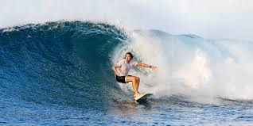
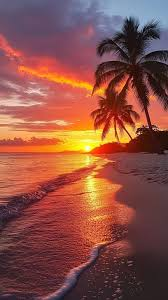
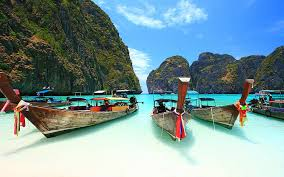

Hey! My name is Fiona, and welcome to my travel blog.I'll be 1taking you along on one of the most unforgettable trips of my life our adventure to Fire Island. The beaches were breathtaking, the sand was soft and golden, and that tropical island vibe was everywhere you looked. We went surfing, swam in the salty ocean water, and watched the fish dart beneath us in the clear blue sea. It was pure magic.
Wilma and I also had the most amazing hotel experience at the Fire Island hotel,waking up to the sound of the ocean every morning was everything. The island itself is so rich and full of life. There are exotic birds, fascinating wildlife, and lush greenery all around. We went on jungle hikes, tried bird watching for the first time, and discovered just how many incredible things this island has to offer. Fire Island truly has a piece of my heart.


Fire Island is waiting for you. Plan your own National Park adventure today!
Plan Your Fire Island Adventure